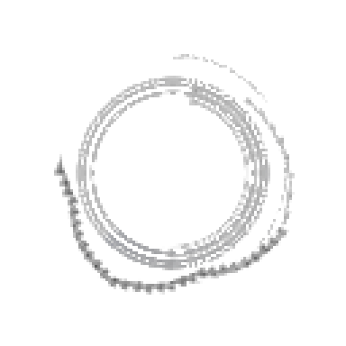
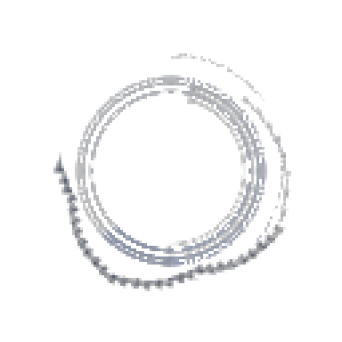
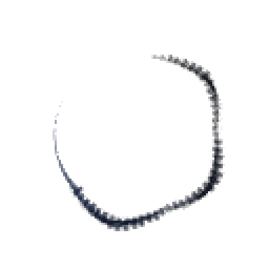
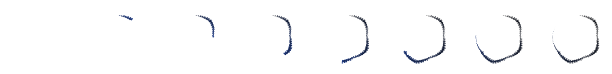
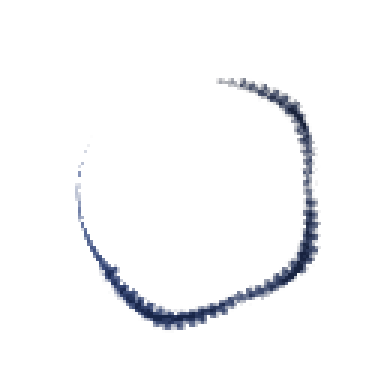
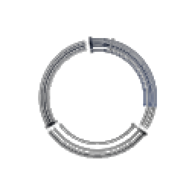
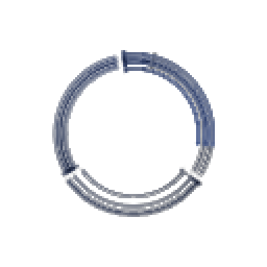

Painting, step 1
18 Nov. The core now paints: from each voice it decides where a stroke goes, how wide, how wet and which hand, and keeps a map of how much paint is where. Here Scan and the Picture amount read that map in place of the trace. Nothing on the page has changed yet; these are offline renders by the instrument’s own core, of the painting study’s four phrases, for you to judge by ear before step 2 puts it live.
What you are hearing
The canvas is a record. Time goes clockwise from the top, one turn in 8 s, and pitch goes outward: A0 a third of the way out, C8 at the edge, so a held note is an arc at its own radius and a chord is concentric arcs. Each note reads the ring at its own pitch and plays a table of its own, so its tone is the paint in its own register. Scan reads thickness, never colour, and wet paint reads 1.4 times as strong as dry. The paint fades by a half-life of 16 s, two turns.
The Picture amount’s three reads come off the paint. Glow is wet coverage, Motion is paint being laid, and Memory is new paint landing on old. They go through the picture stage as the trace’s do, so Responds to, Rise and Fall and Swell work as now. The Tine piano and the Drawbar organ are Settled presets at Picture amount 0, so there you hear Scan alone. The Slow pad (100) and Crossed hands (47) hear the reads too.
Two dryings. Yours: thin paint falls to a tenth wet in 2 s and a thick stroke in 6 s, smoothly by thickness. Beside it is drying three times slower (6 s and 18 s), chosen because it is the setting that crosses the turn: a thick stroke is still wet when the brush comes round 8 s later, so a held note merges into its own start rather than laying over it dry. Through Scan the two differ only a little, since wet paint reads only 1.4 times dry. Where the Picture amount is up, the slower drying doubles Glow on Crossed hands (0.17 to 0.33) and lifts it by half on the pad, which is the difference to listen for. A faster drying (0.5 s and 1.5 s) was rendered too and moved Glow as far the other way, but you had already asked for slower than the study’s 1.2 s.
In the pictures, thickness is grey (a thick stroke near black) and wet paint is blue over it, as far as it is wet. Ink is the look only and never reaches the sound, so it is not drawn here.
What the numbers mean
Centroid is the brightness of the table Scan reads, in harmonics. A sine is 1, around 2 is a mellow, hollow tone and 3 is reedier. The bracket is the tenth and ninetieth percentile: how far it ranges. Movement is how much the table changes from one sixtieth of a second to the next, from nought (still) to one (replaced). Under about 0.005 you hear a steady tone; 0.02 and up shimmers or shifts. Above the 8th is the share of energy past the eighth harmonic, which is harsh when large. Glow, Motion and Memory are the stage’s medians, what the Picture amount pushes with. The last column is where the paint landed: into wet paint (merging), onto dry (layering) or on bare canvas. Painting reads one table a note, so its numbers are over every sounding note; the trace reads one a hand.
Held pad
Slow pad, Breathing, Picture amount 100: a Cmaj9 voicing (C3 G3 D4 E4 B4) held 9 s, 12 s in all. Held past one turn, so its strokes come back round over their own start.
As the instrument ships: Scan and the Picture amount read the trace.
The owner's drying: thin paint 2 s, a thick stroke 6 s.
Three times slower: 6 s and 18 s, so a thick stroke is still wet a turn later.
| Centroid (p10–p90) | Movement | Above the 8th | Glow | Motion | Memory | Into wet / onto dry / bare, % | |
|---|---|---|---|---|---|---|---|
| Trace | 1.14 (1.03–1.33) | 0.0235 | 0.0% | 0.63 | 0.63 | 0.18 | – |
| Paint | 1.77 (1.47–3.14) | 0.0050 | 0.4% | 0.35 | 0.38 | 0.10 | 11 / 1 / 87 |
| Paint, slow drying | 1.70 (1.44–2.95) | 0.0048 | 0.3% | 0.51 | 0.38 | 0.10 | 12 / 1 / 87 |
Crossed hands
The owner's own setup code, Picture amount 47: the left hand's chords under a right-hand run that quickens, then two grace notes after a breath, 15.5 s.
As the instrument ships: Scan and the Picture amount read the trace.
The owner's drying: thin paint 2 s, a thick stroke 6 s.
Three times slower: 6 s and 18 s, so a thick stroke is still wet a turn later.


| Centroid (p10–p90) | Movement | Above the 8th | Glow | Motion | Memory | Into wet / onto dry / bare, % | |
|---|---|---|---|---|---|---|---|
| Trace | 1.15 (1.02–1.51) | 0.0050 | 0.0% | 0.54 | 0.17 | 0.26 | – |
| Paint | 2.10 (1.47–3.49) | 0.0050 | 0.3% | 0.17 | 0.14 | 0.04 | 6 / 1 / 93 |
| Paint, slow drying | 2.03 (1.44–3.48) | 0.0049 | 0.3% | 0.33 | 0.14 | 0.04 | 6 / 1 / 93 |
Fast run
Tine piano, Settled, Picture amount 0 and Scan at 50: C major from C4 to C5 and back three times at nine notes a second, swelling to each top, 7.2 s.
As the instrument ships: Scan and the Picture amount read the trace.
The owner's drying: thin paint 2 s, a thick stroke 6 s.
Three times slower: 6 s and 18 s, so a thick stroke is still wet a turn later.



| Centroid (p10–p90) | Movement | Above the 8th | Glow | Motion | Memory | Into wet / onto dry / bare, % | |
|---|---|---|---|---|---|---|---|
| Trace | 1.13 (1.01–1.42) | 0.0289 | 0.0% | 0.76 | 0.62 | 0.00 | – |
| Paint | 3.01 (2.12–3.65) | 0.0043 | 2.3% | 0.44 | 0.62 | 0.18 | 34 / 0 / 66 |
| Paint, slow drying | 3.00 (2.10–3.64) | 0.0042 | 2.3% | 0.52 | 0.62 | 0.18 | 34 / 0 / 66 |
Chord change
Drawbar organ, Settled, Picture amount 0 and Scan at 14: Dm7 G7 Cmaj7 Am7, 2.5 s each, 11.6 s.
As the instrument ships: Scan and the Picture amount read the trace.
The owner's drying: thin paint 2 s, a thick stroke 6 s.
Three times slower: 6 s and 18 s, so a thick stroke is still wet a turn later.


| Centroid (p10–p90) | Movement | Above the 8th | Glow | Motion | Memory | Into wet / onto dry / bare, % | |
|---|---|---|---|---|---|---|---|
| Trace | 1.12 (1.04–1.24) | 0.0198 | 0.0% | 0.63 | 0.47 | 0.16 | – |
| Paint | 1.90 (1.47–2.83) | 0.0051 | 0.4% | 0.40 | 0.51 | 0.16 | 21 / 1 / 78 |
| Paint, slow drying | 1.87 (1.44–2.80) | 0.0050 | 0.4% | 0.53 | 0.52 | 0.16 | 21 / 1 / 78 |
What it costs
A held chord of sixteen voices: the instrument takes 0.168 s of one core for each second of audio on the trace, and 0.185 s painting (best of three, natively, on the cloud machine these were made on). That is about 0.35 microseconds a sample more, under 2 per cent of a core. Over these phrases, against the trace: held pad -11%, crossed hands -10%, fast run +11%, chord change +14%, each one run, so within the run-to-run noise of a shared machine. The painter runs once a picture frame (sixty a second), and the voices’ own tables cost one ring read and one table each, a frame.
Made by render.py (and render.cpp, the core playing the script) and then
page.py, beside this page; every number is in results.json. The audio is MP3 at 64 kbps.